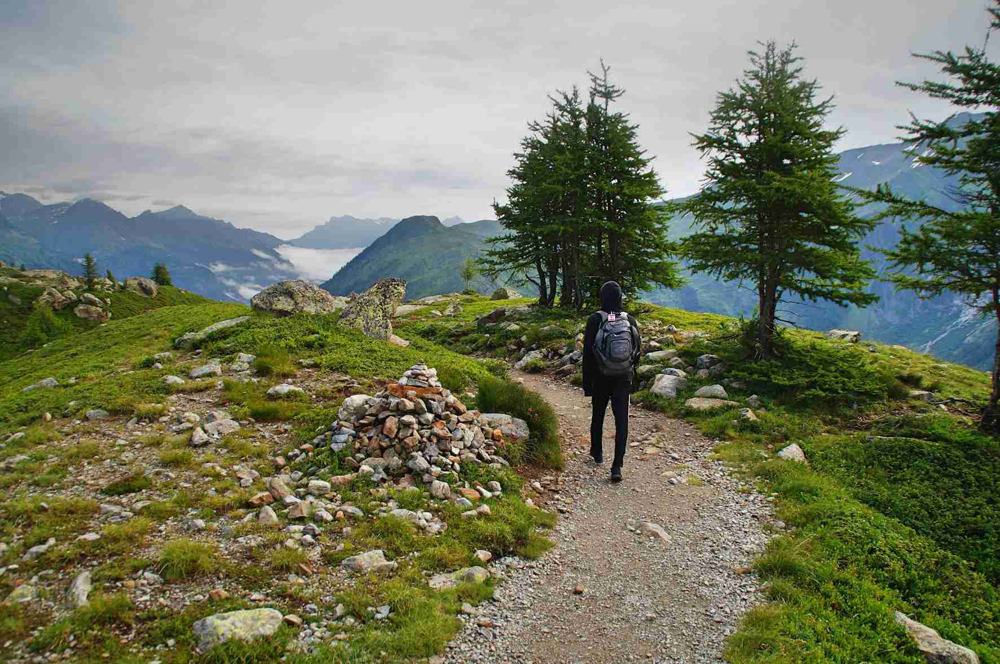
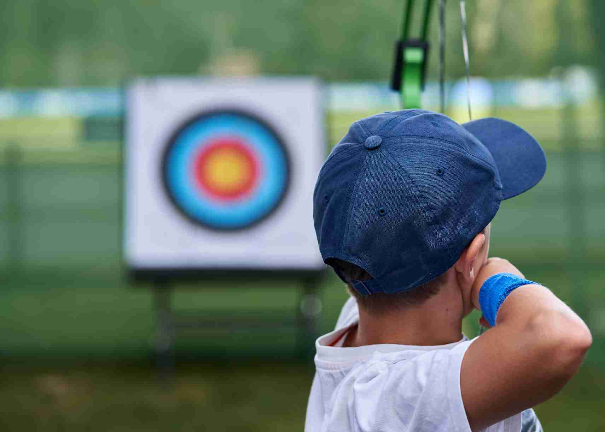
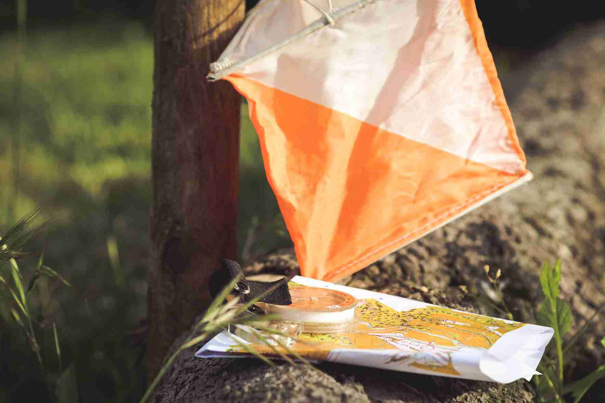
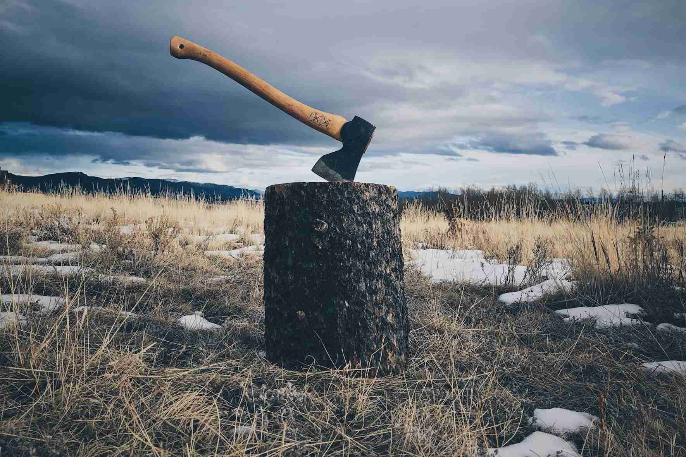
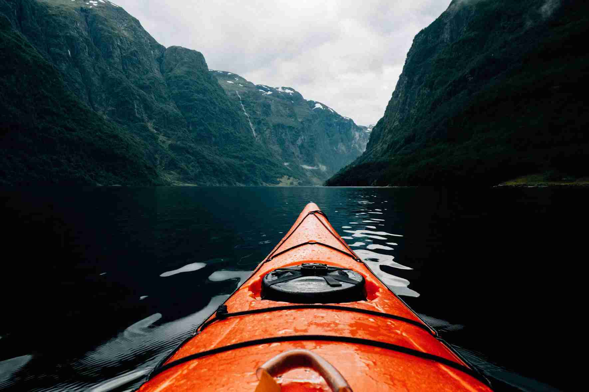
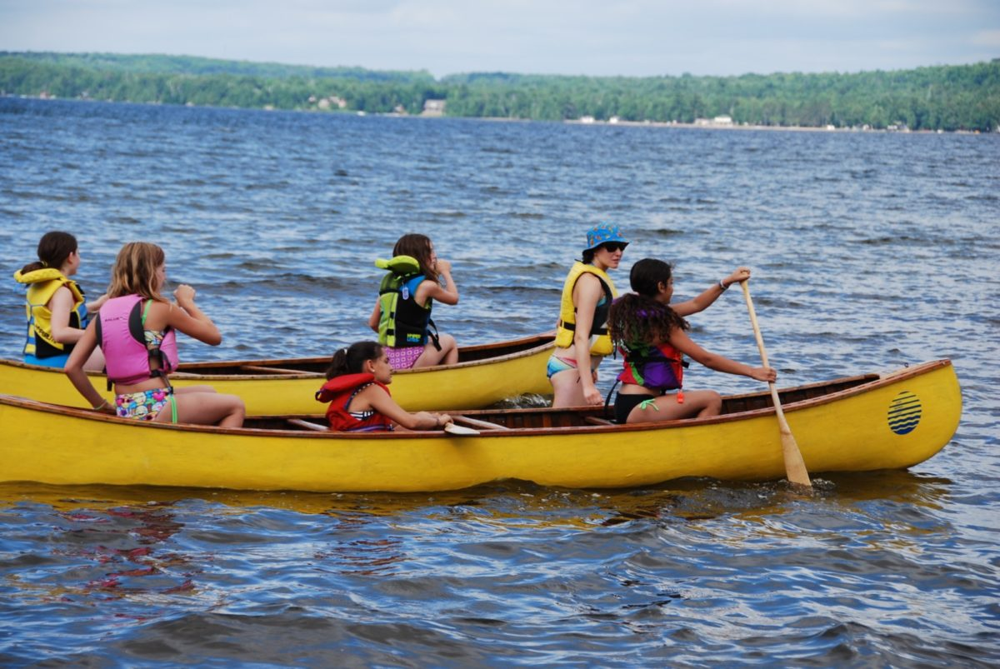
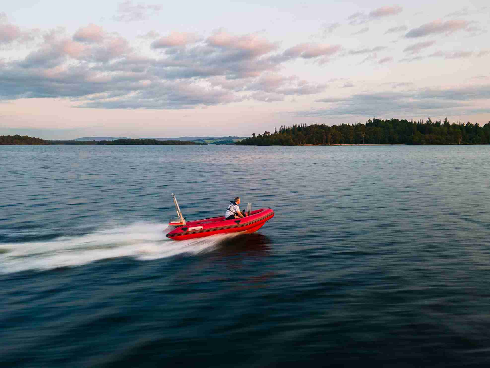
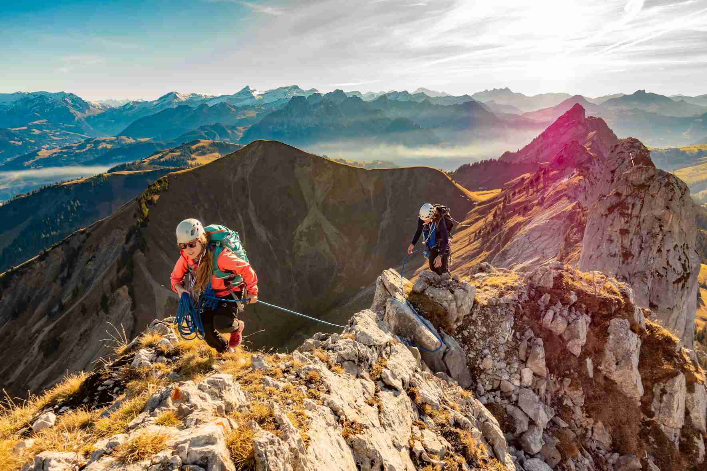
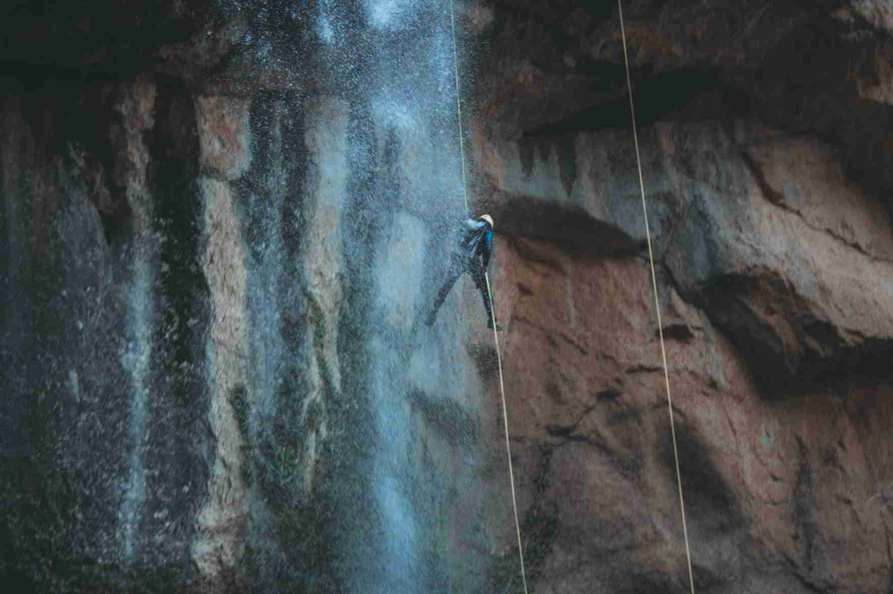

Activities on offer at Lochquarry include:
Visitors can take part in a wide range of land-based activities on and off site.
Hillwalking From short walks around the site to Munro-bagging expeditions, Lochquarry has it all! Walks can be tailored to suit any age or experience of groups and can last from one hour to all day adventures. Max group size: 12 Ages : 6+ |
Archery Are you the next Robin Hood? Learn to hold a bow and fire an arrow and take part in fast and fun shootout competitions. Max group size: 6 Ages : 6+ |
Orienteering Set in the centre’s grounds, find all the markers and make it back in time to show off your superior navigation knowledge. Max group size: 2+ Ages : 6+ |
Axe Throwing Take yourself back to a time of Vikings and have a go at throwing an axe. Try to hit the target, better yet throw yourself a bullseye. Max group size: 6 Ages : 10+ |
Water-based activities all take place on Lochquarry itself.
Kayaking Have a go at paddling, rolling and rafting in one of our brand new kayaks. Max group size: 8 Ages : 8+ |
Canoeing Work single-handedly or in pairs to canoe the length of Lochquarry. You can even take a picnic with you and explore some of the Loch’s islands. Max group size: 8 boats (up to 16 people). Ages : 6+ |
Powerboating Take control of one of the Centre’s two RIBs out on Lochquarry and try your hand powerboating. Max group size: 6 Ages : 12+ |
All rope-based activities take place on site with full safety equipment provided.
Climbing Scale the highs of one of the local quarry slabs. Max group size: 8 Ages : 8+ |
Abseiling Take the scary step and abseil from the top of one of the local quarry slabs. There is a lovely view... if you are brave enough to look down! Max group size: 8 Ages : 8+ |
Pole Climb
Ever wondered how telephone engineers get to the top of the telephone poles? Well, here’s your chance to find out. Max group size: 8 Ages : 8+ |
"The archery was brilliant, but not as good as axe throwing, I never thought we'd be allowed to do that! I got one of my axes right in the middle of the target" − Scott, aged 13
Interested in exploring more about outdoor adventures in Scotland? Check out the Visit Scotland website for more information.